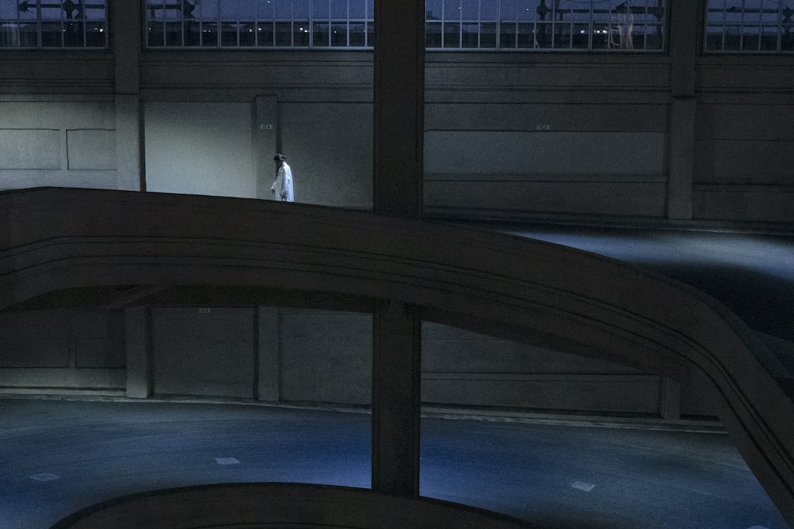
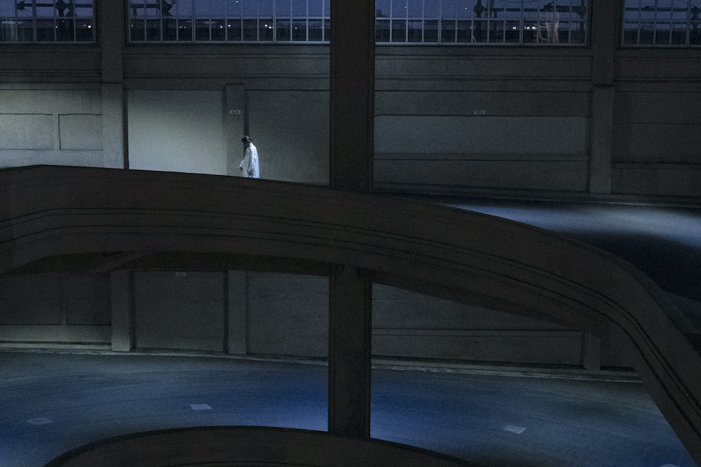
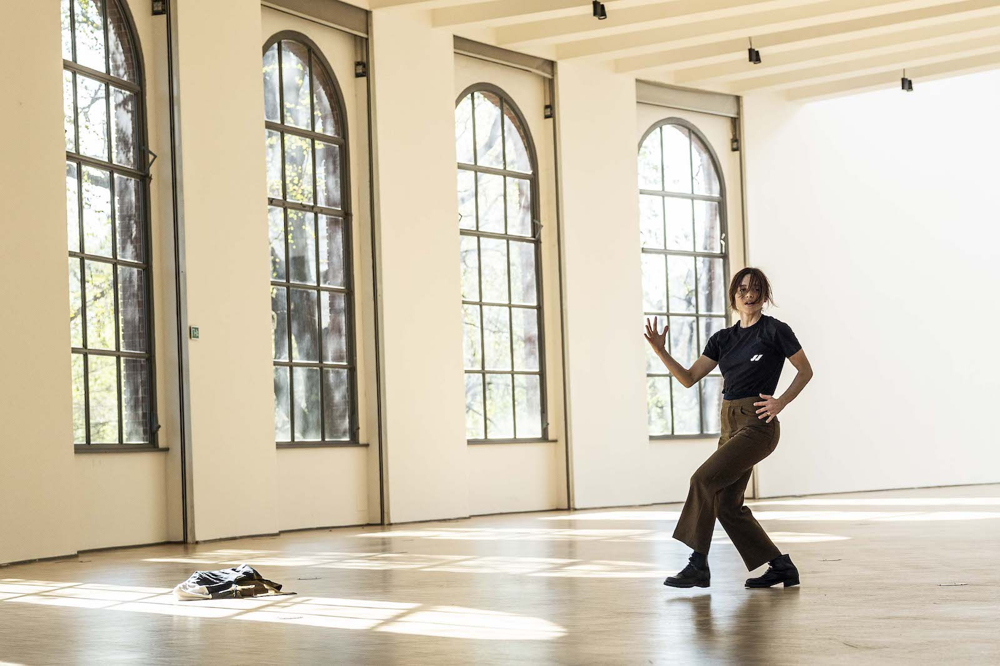
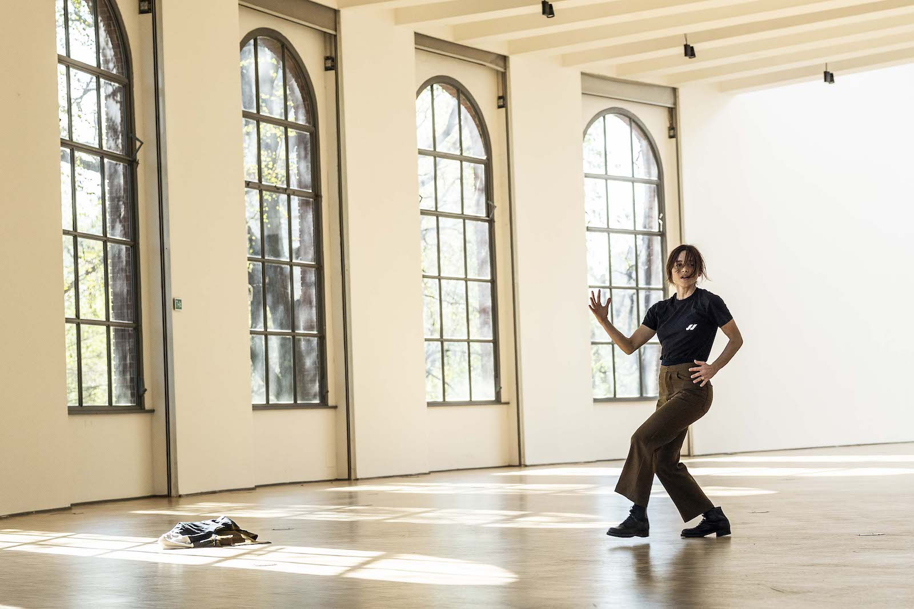
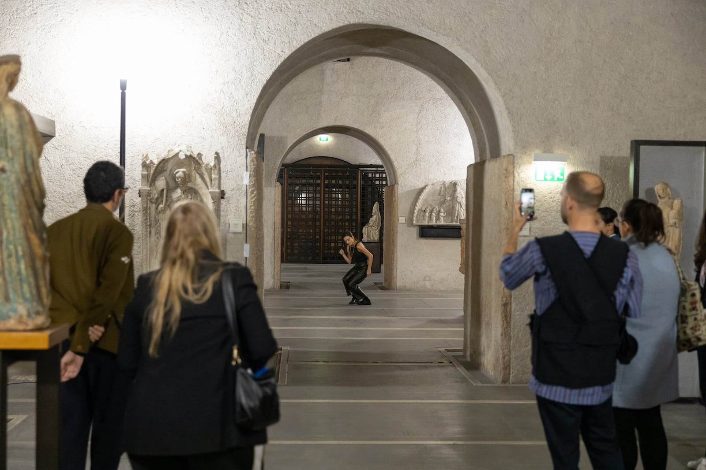
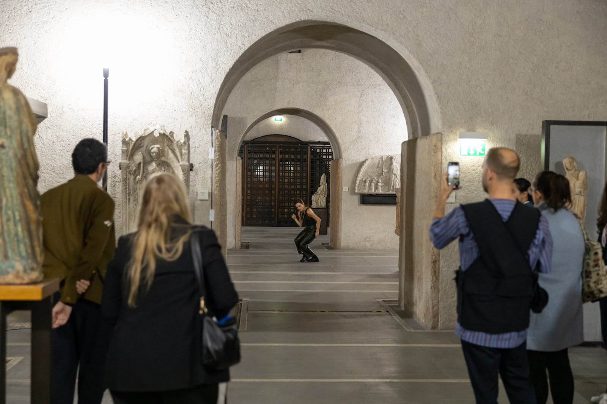
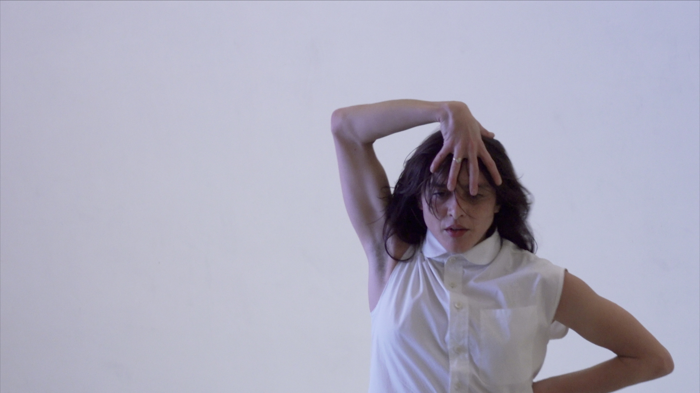
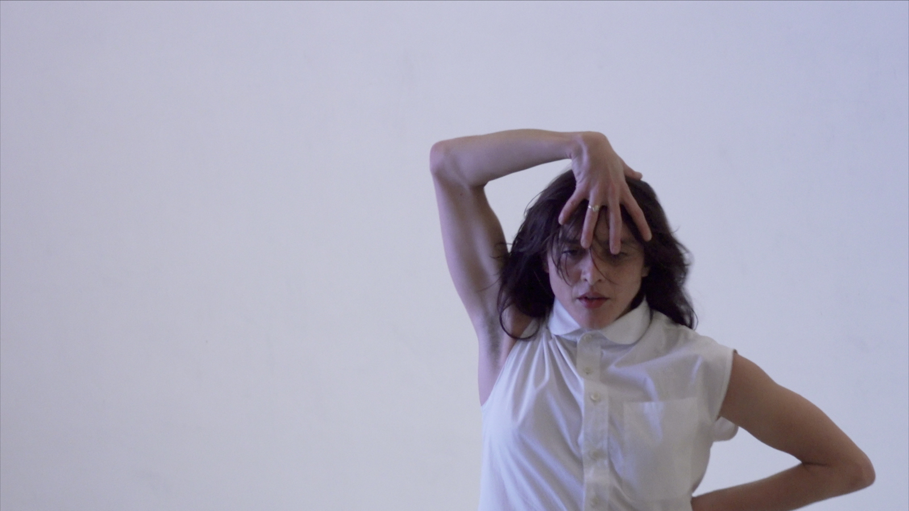

Senza titolo (Untitled) acquires forms, durations, and tones each time differently. The space is left untouched and triggers the dance, which is built in the actual and immediate encounter between the acting elements: the rudiments of the architecture, movements and postures of the audience. Even the sound environment offered by the place as it is, without adding musical elaboration.
The choreographic composition does not follow a priori writing, task, or guidelines, it is constructed simultaneously with the action so each element informs each choice instantly. The audience is invited to move, be distracted, be bored, or do something else. By placing and moving through the space, the viewer introduces new elements to the performance, fueling its composition.
Fabio Quaranta designs performance costumes by actively engaging in a network of ideas and influences that come together to shape the overall performance.
Place or space?: Every step arrives at a place.
If you care where you are then we will care also.
J. Borrows, "A choreographer's Handbook"
Senza titolo is a part of the choreographic project ARCIPELAGO/PRATICHE DI ABITAZIONE TEMPORANEA, actions built to be experienced in non-theatrical spaces.
So far, it took place in:
Venezia (Teatrino di Palazzo Grazzi, curated by Video Sound Art, 2021),
Verona (ArtVerona, curated by Maria Marzia Minelli and Claudia Santeroni, 2022),
Milano (Triennale Milano, 2023),
Torino (Pinacoteca Agnelli - Pista 500, curated by OHT, 2023).


 


 



 



 
